CosMx Whole Transcriptome: Human Colon Mini Dataset
Source:vignettes/cosmx_mini_colon_wtx.Rmd
cosmx_mini_colon_wtx.Rmd1 The dataset
NanoString CosMx Whole Transcriptome (WTx), human colon, slide S0. This is a single field of view (FOV 71) cut out of the ~400-FOV export the companion GiottoDisk tutorial works through. The donor is a 56-year-old woman with a G1, stage IVA T3N0M1a primary sigmoid adenocarcinoma, and the field was chosen where tumor, desmoplastic stroma and residual mucosa meet.
The panel is carried over whole; only the cells are subset:
| full slide S0 | this subset | |
|---|---|---|
| fields of view | ~400 | 1 (FOV 71) |
| cells | 493,834 | 1,752 |
| panel features | 20,378 | 20,378 |
| RNA targets | 18,935 | 18,935 |
| negative probes | 50 | 50 |
| SystemControl probes | 1,393 | 1,393 |
The parent export is Bruker Spatial Biology’s CosMx Human Whole Transcriptome colon dataset.
The subset is registered with GiottoData as
cosmx_mini_colon_wtx, so
getSpatialDataset() fetches and unpacks it in one call.
2 Packages
remotes::install_github("giotto-suite/GiottoUtils", ref = "dev")
GiottoUtils::suite_install(c("Giotto", "GiottoData"), ref = "disk")
BiocManager::install("scran")3 Setup
suppressMessages({
library(Giotto); library(GiottoClass); library(GiottoVisuals)
library(GiottoData)
library(data.table); library(ggplot2); library(cowplot)
})
plot_theme <- theme_classic(base_size = 9)
results_folder <- "results" # where every Giotto figure is saved as a PNG
instructions <- createGiottoInstructions(save_dir = results_folder,
save_plot = TRUE,
show_plot = TRUE,
return_plot = FALSE,
python_path = NULL) # NULL uses the Python in the installed Giotto environmentgetSpatialDataset() downloads the bundle, checks it
against the checksum in GiottoData’s manifest and unpacks
it, then returns the directory it used. Either way the download is
skipped on a re-run.
# where the dataset is downloaded and unpacked; left unset,
# getSpatialDataset() defaults to tools::R_user_dir("GiottoData", "cache")
data_path <- "data/"
mini_dir <- getSpatialDataset("cosmx_mini_colon_wtx", directory = data_path)
mini_dir## [1] "data//cosmx_mini_colon_wtx"4 Create the giotto object
mini_cosmx <- createGiottoCosMxObject(
cosmx_dir = mini_dir,
slide = 1,
feat_type = c("rna", "negprobes", "falsecode"),
split_keyword = list("^Negative", "^SystemControl"),
poly_pref = "csv",
load_expression = TRUE,
load_cellmeta = TRUE,
load_transcripts = TRUE,
load_images = NULL,
instructions = instructions,
verbose = FALSE)
mini_cosmx
showGiottoCellMetadata(mini_cosmx, nrows = 1)
showGiottoFeatMetadata(mini_cosmx, nrows = 2)5 Quality control and filtering
mini_cosmx <- addStatistics(mini_cosmx, stats = "cell",
expression_values = "raw")
# the same statistics for the negative-control probes
mini_cosmx <- addStatistics(mini_cosmx, feat_type = "negprobes",
stats = "cell", expression_values = "raw")
prefilter_qc <- pDataDT(mini_cosmx)
prefilter_qc[, depth := as.numeric(nCount_RNA)]addStatistics() writes per-cell counts, genes detected
and total expression into the cell metadata, which is what the
thresholds below act on. Running it on negprobes too gives
the background against which the RNA counts should be read: the 50
negative probes carry no target, so their per-cell totals are the noise
floor for this panel.
| cell_ID | nr_feats | total_expr |
|---|---|---|
| c_1_71_1 | 1 | 1 |
| c_1_71_2 | 1 | 1 |
| c_1_71_3 | 1 | 1 |
Pre-filter distributions and an overlap cross-check
Transcripts carry the vendor’s own cell assignment, so re-deriving the counts by overlapping them with the segmentation is an independent check on both that assignment and the polygon repair.
mini_cosmx <- calculateOverlap(mini_cosmx, spat_info = "cell",
feat_info = "rna", verbose = FALSE)
overlap_obj <- overlapToMatrix(mini_cosmx, spat_info = "cell",
feat_info = "rna", name = "overlap")
vendor_matrix <- getExpression(overlap_obj, values = "raw", output = "matrix")
derived_matrix <- getExpression(overlap_obj, values = "overlap",
output = "matrix")[rownames(vendor_matrix),
colnames(vendor_matrix)]
vendor_totals <- Matrix::colSums(vendor_matrix)
derived_totals <- Matrix::colSums(derived_matrix)
data.table(vendor_counts = sum(vendor_matrix),
derived_counts = sum(derived_matrix),
correlation = round(cor(vendor_totals, derived_totals), 3),
median_ratio = round(median(derived_totals /
pmax(vendor_totals, 1)), 3))
ggplot(data.table(vendor = vendor_totals, derived = derived_totals),
aes(vendor, derived)) +
geom_point(size = 0.5, alpha = 0.35, stroke = 0) +
geom_abline(slope = 1, intercept = 0, linetype = "dashed",
color = "#C44E52") +
scale_x_log10() + scale_y_log10() +
labs(x = "vendor counts per cell", y = "overlap-derived counts per cell") +
plot_theme| vendor_counts | derived_counts | correlation | median_ratio |
|---|---|---|---|
| 3010885 | 3106445 | 0.915 | 0.989 |
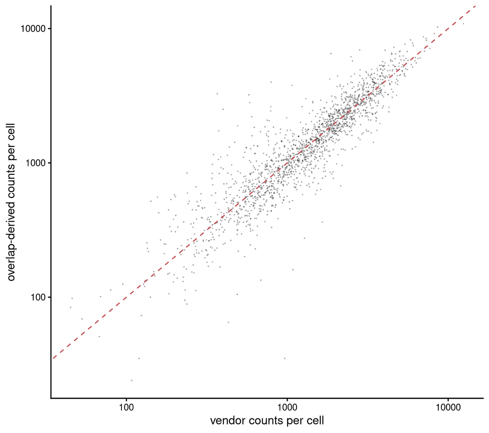
Derived totals run slightly high because ~7% of detections are unassigned by the vendor yet still fall inside a polygon. Scatter off the diagonal reflects the polygon repair, since a few microns of residual placement error moves boundary transcripts into a neighboring cell. A much lower correlation would point at the repair rather than the assignment.
filterDistributions() reads the per-cell statistics
straight off the object, so the two panels below are the distributions
before any filtering.
p_counts <- filterDistributions(mini_cosmx, detection = "cells",
method = "sum", nr_bins = 60,
show_plot = FALSE, return_plot = TRUE,
save_plot = FALSE) +
scale_x_log10() +
labs(title = NULL, x = "counts per cell", y = "cells") + plot_theme
p_genes <- filterDistributions(mini_cosmx, detection = "cells",
method = "threshold", nr_bins = 60,
show_plot = FALSE, return_plot = TRUE,
save_plot = FALSE) +
geom_vline(xintercept = 100, color = "#C44E52", linetype = "dashed") +
labs(title = NULL, x = "genes per cell", y = "cells") + plot_theme
p_qc <- plot_grid(p_counts, p_genes, nrow = 1)
GiottoVisuals::all_plots_save_function(mini_cosmx, p_qc,
default_save_name = "filterDistributions",
base_width = 9, base_height = 3.2)
print(p_qc)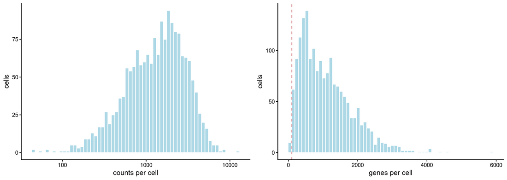
qc_probs <- c(0, 0.5, 0.9, 0.99, 1)
qc_table <- data.table(
metric = c("counts per cell", "genes per cell"),
rbind(round(as.numeric(quantile(prefilter_qc$depth, qc_probs,
na.rm = TRUE)), 1),
round(as.numeric(quantile(prefilter_qc$nr_feats, qc_probs,
na.rm = TRUE)), 1)))
setnames(qc_table, 2:6, c("min", "median", "q90", "q99", "max"))
qc_table| metric | min | median | q90 | q99 | max |
|---|---|---|---|---|---|
| counts per cell | 45 | 1422.5 | 3426.4 | 5863.4 | 12449 |
| genes per cell | 39 | 935.5 | 2108.0 | 3258.0 | 5865 |
mini_cosmx <- filterGiotto(mini_cosmx,
expression_threshold = 1,
feat_det_in_min_cells = 25,
min_det_feats_per_cell = 100)
mini_cosmx6 Normalization and dimension reduction
SEED <- 1234
mini_cosmx <- normalizeGiotto(mini_cosmx, scale_feats = FALSE,
scale_cells = FALSE, scalefactor = 6000)
mini_cosmx <- normalizeGiotto(mini_cosmx, norm_methods = "pearson_resid",
name = "pearson_resid", verbose = FALSE)
mini_cosmx <- addStatistics(mini_cosmx, stats = c("cell", "feature"))
mini_cosmx <- calculateHVF(mini_cosmx, method = "cov_groups",
nr_expression_groups = 20,
zscore_threshold = 1.1,
show_plot = FALSE, save_plot = FALSE,
return_plot = FALSE, verbose = FALSE)
mini_cosmx <- runPCA(mini_cosmx, feats_to_use = "hvf", scale_unit = TRUE,
center = TRUE, ncp = 20, method = "auto",
set_seed = TRUE, seed_number = SEED, verbose = FALSE)## [1] "KRT7" "C1QC" "ITGB2" "RENBP" "HPSE2" "OR4C3"
screePlot(mini_cosmx, ncp = 20, verbose = FALSE)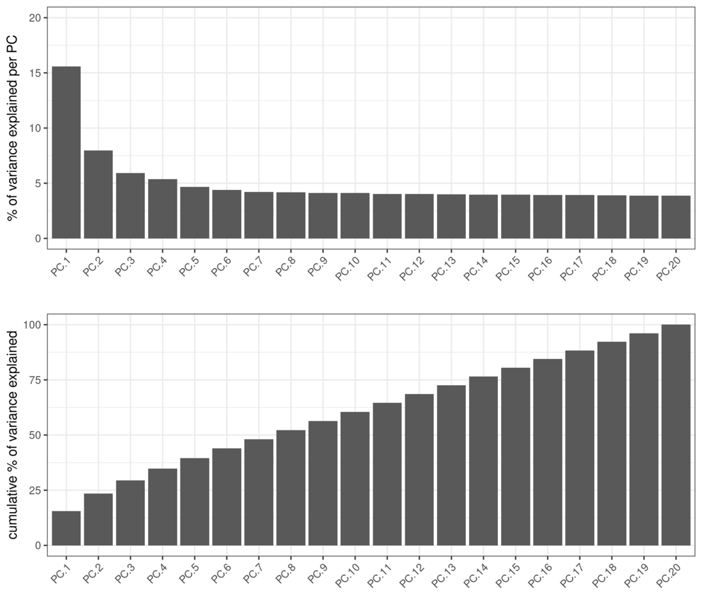
7 Neighbors, UMAP, clustering
# PC1 is dropped: on the full slide it correlates with sequencing depth rather
# than biology, and one field is too small to re-derive that cut
mini_cosmx <- createNearestNetwork(mini_cosmx, type = "sNN", k = 20,
dimensions_to_use = 2:20,
verbose = FALSE)
mini_cosmx <- doLeidenCluster(mini_cosmx, name = "leiden_clus",
nn_network_to_use = "sNN",
objective_function = "modularity",
resolution = 1,
n_iterations = 100, set_seed = TRUE,
seed_number = SEED)
mini_cosmx <- runUMAP(mini_cosmx, dimensions_to_use = 2:20,
n_neighbors = 20, min_dist = 0.3,
spread = 1, n_sgd_threads = 0,
set_seed = TRUE, seed_number = SEED, verbose = FALSE)
showGiottoDimRed(mini_cosmx, nrows = 3)
cell_metadata <- pDataDT(mini_cosmx)
cell_metadata[, clus := factor(leiden_clus,
levels = sort(unique(as.integer(leiden_clus))))]
CLUS_LEVELS <- levels(cell_metadata$clus)
LEIDEN_PAL <- setNames(getDistinctColors(length(CLUS_LEVELS)), CLUS_LEVELS)
data.table(clusters = uniqueN(cell_metadata$clus),
cells = nrow(cell_metadata),
smallest = min(cell_metadata[, .N, by = clus]$N),
largest = max(cell_metadata[, .N, by = clus]$N))| clusters | cells | smallest | largest |
|---|---|---|---|
| 10 | 1738 | 21 | 349 |
p_umap_clusters <- plotUMAP(mini_cosmx, cell_color = "leiden_clus",
cell_color_code = LEIDEN_PAL,
point_size = 0.9, point_alpha = 0.7,
point_shape = "border", point_border_stroke = 0,
show_center_label = TRUE, label_size = 3.2,
show_plot = FALSE, return_plot = TRUE,
save_plot = FALSE)
p_umap_genes <- plotUMAP(mini_cosmx, cell_color = "nr_feats",
color_as_factor = FALSE,
cell_color_gradient = "viridis",
gradient_style = "sequential",
point_size = 0.9, point_alpha = 0.7,
point_shape = "border", point_border_stroke = 0,
show_plot = FALSE, return_plot = TRUE,
save_plot = FALSE)
p_umap_genes <- p_umap_genes +
scale_fill_viridis_c(transform = "log10", name = "genes\nper cell")
p_umaps <- plot_grid(p_umap_clusters, p_umap_genes, nrow = 1,
rel_widths = c(1, 0.95))
GiottoVisuals::all_plots_save_function(mini_cosmx, p_umaps,
default_save_name = "UMAP",
base_width = 11, base_height = 4.6)
print(p_umaps)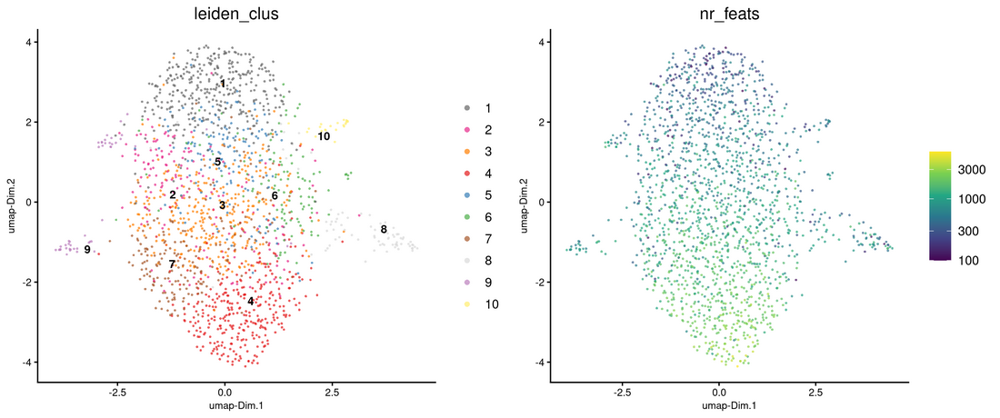
8 Markers
findScranMarkers_one_vs_all() compares each cluster
against the pooled remainder with a Welch test and returns a
ranking column, which orders the genes within each
cluster.
Disclaimer: this is a 1,752-cell fixture, not a study. One field of view cannot support biological conclusions: clusters are small, rare populations are absent or represented by a handful of cells, and the marker statistics are correspondingly unstable. Treat everything downstream as a demonstration of the pipeline, and do not read the cell-type calls as findings.
expr_norm <- GiottoClass::getExpression(mini_cosmx, values = "normalized",
output = "matrix")
scran_markers <- findScranMarkers_one_vs_all(mini_cosmx,
cluster_column = "leiden_clus",
expression_values = "normalized",
verbose = FALSE)
markers_de <- scran_markers[
, .(feats, cluster = as.character(cluster), logFC, p_value = p.value, FDR,
ranking)]
markers_de <- markers_de[logFC >= 0.25 & FDR <= 0.05][order(cluster, ranking)]
head(markers_de, 5)| feats | cluster | logFC | p_value | FDR | ranking |
|---|---|---|---|---|---|
| RPS18 | 1 | 0.6442366 | 0.0000098 | 0.0000872 | 1 |
| RPS4X | 1 | 0.4593824 | 0.0008676 | 0.0036157 | 2 |
| TMSB10 | 1 | 0.4477043 | 0.0007153 | 0.0030872 | 3 |
| PIGR | 1 | 0.4150404 | 0.0053978 | 0.0158247 | 4 |
| RPS19 | 1 | 0.3930049 | 0.0068114 | 0.0192436 | 5 |
top_markers <- markers_de[order(cluster, ranking)][
, head(.SD, 8), by = cluster]
cluster_table <- merge(
cell_metadata[, .(cells = .N), by = .(cluster = as.character(clus))],
top_markers[, .(top_genes = paste(feats, collapse = ", ")), by = cluster],
by = "cluster", all.x = TRUE)
cluster_table[is.na(top_genes), top_genes := "(no markers passed the filter)"]
cluster_table[, cluster := factor(cluster, levels = CLUS_LEVELS)]
setorder(cluster_table, cluster)
cluster_table[]| cluster | cells | top_genes |
|---|---|---|
| 1 | 349 | RPS18, RPS4X, TMSB10, PIGR, RPS19, RPLP2 |
| 2 | 159 | MPV17L, AEBP1, THBS1 |
| 3 | 312 | RIMBP3B, OR10H5, NPIPB3, MPV17L, ZNF91, GID4, RPS3, MEX3C |
| 4 | 329 | OR10H5, RIMBP3B, MPV17L, NPIPB3, ZNF91, EPCAM, MEX3C, NPIPB11 |
| 5 | 144 | RPS27A |
| 6 | 112 | COL1A1 |
| 7 | 189 | RIMBP3B, OR10H5, MEX3C, RPS3, NPIPB11, ATP10B, MPV17L |
| 8 | 77 | CD74, CTSB, CTSD, RNASE1, HLA-DRB1, SPP1, C1QC, APOE |
| 9 | 46 | COL4A1, SPARC, COL4A2, COL18A1, PLVAP, IGFBP7, SPARCL1, HSPG2 |
| 10 | 21 | IGKC, IGHA1, IGHG1, JCHAIN, PRMT8, COL1A1, DENND6B, SMCO3 |
9 Naming the clusters
9.1 Curated marker panels
One curated gene set per broad cell type, used to read the clusters below and to pick the genes drawn in the dot plot.
colon_markers_l1 <- list(
endothelial = c("PECAM1", "CDH5", "CLDN5", "VWF", "EGFL7", "PLVAP"),
epithelial_secretory = c("MUC2", "CLCA1", "FCGBP", "ZG16", "SPINK4", "REG1A"),
fibroblast_CAF = c("COL1A1", "COL1A2", "COL3A1", "DCN", "LUM", "POSTN"),
immune_mast = c("TPSB2", "CPA3", "MS4A2", "HDC"),
immune_myeloid = c("CD68", "CD14", "CSF1R", "AIF1", "C1QC", "APOE"),
immune_nk_t = c("CD3D", "CD3E", "TRAC", "PTPRC", "TRBC1", "GNLY"),
immune_plasma = c("IGHA1", "IGKC", "JCHAIN", "MZB1", "DERL3"),
myofibroblast_SMC = c("MYH11", "ACTG2", "DES", "LMOD1", "CNN1"),
state_derepressed = c("ZNF91", "MPV17L", "GID4", "SHB", "OR10H5"),
tumor = c("CEACAM5", "CEACAM6", "S100P", "TESC", "ETV4",
"AXIN2"))9.2 Attaching labels
One entry per Leiden cluster. If this is re-run the cell typing may change, because Leiden numbers carry no meaning across runs.
broad_palette <- c(
epithelial_colonocyte = "#238B45",
tumor = "#B2182B",
fibroblast_CAF = "#8C510A",
endothelial = "#00BFC4",
immune_myeloid = "#E08214",
immune_plasma = "#67A9CF",
QC_unassigned = "gray70")
BROAD <- c(
"1" = "epithelial_colonocyte", "2" = "fibroblast_CAF",
"3" = "tumor", "4" = "tumor",
"5" = "QC_unassigned", "6" = "fibroblast_CAF",
"7" = "tumor", "8" = "immune_myeloid",
"9" = "endothelial", "10" = "immune_plasma")
stopifnot("BROAD must name every cluster" =
length(setdiff(CLUS_LEVELS, names(BROAD))) == 0)
mini_cosmx <- annotateGiotto(mini_cosmx, annotation_vector = BROAD,
cluster_column = "leiden_clus",
name = "cell_type_broad")
cell_metadata <- merge(cell_metadata,
pDataDT(mini_cosmx)[, .(cell_ID, cell_type_broad)],
by = "cell_ID")
CELL_TYPES <- sort(unique(cell_metadata$cell_type_broad))
CELL_TYPE_COLORS <- broad_palette[CELL_TYPES]
cell_metadata[, cell_type := factor(cell_type_broad, levels = CELL_TYPES)]
dot_genes <- intersect(unique(unlist(colon_markers_l1, use.names = FALSE)),
rownames(expr_norm))
dot_means <- sapply(split(cell_metadata$cell_ID, cell_metadata$cell_type),
function(ids) Matrix::rowMeans(expr_norm[dot_genes, ids,
drop = FALSE]))
dot_midpoint <- round(median(dot_means), 2)
dot_limits <- unname(round(quantile(dot_means, c(0.02, 0.98),
na.rm = TRUE), 2))
dotPlot(mini_cosmx, feats = dot_genes,
cluster_column = "cell_type_broad",
cluster_custom_order = CELL_TYPES,
expression_values = "normalized",
dot_color_gradient = c("#3B4CC0", "#F7F7F7", "#B40426"),
gradient_style = "divergent",
gradient_midpoint = dot_midpoint,
gradient_limits = dot_limits,
dot_scale = 2.6,
axis_text = 5.5,
theme_param = list(axis.text.x = element_text(angle = 45, hjust = 1)))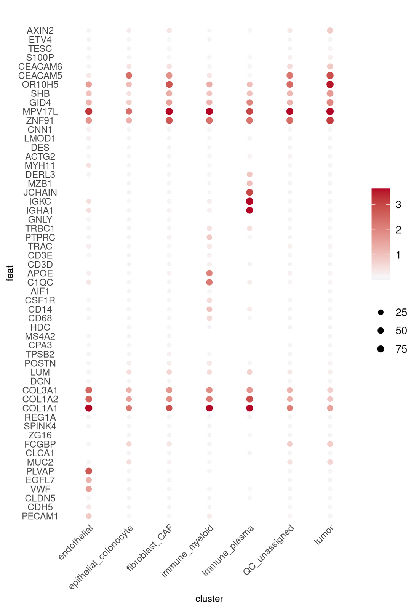
top2_markers <- unique(markers_de[order(cluster, -logFC)][
, head(.SD, 2), by = cluster]$feats)
MARKERS <- c("IGKC", # plasma cell
"COL1A1", # fibroblast / CAF
"PLVAP", # blood endothelium
"APOE") # macrophage
stopifnot(all(MARKERS %in% rownames(expr_norm)))
plotMetaDataHeatmap(mini_cosmx, metadata_cols = "cell_type_broad",
selected_feats = top2_markers,
expression_values = "normalized",
show_values = "zscores_rescaled", x_text_angle = 45)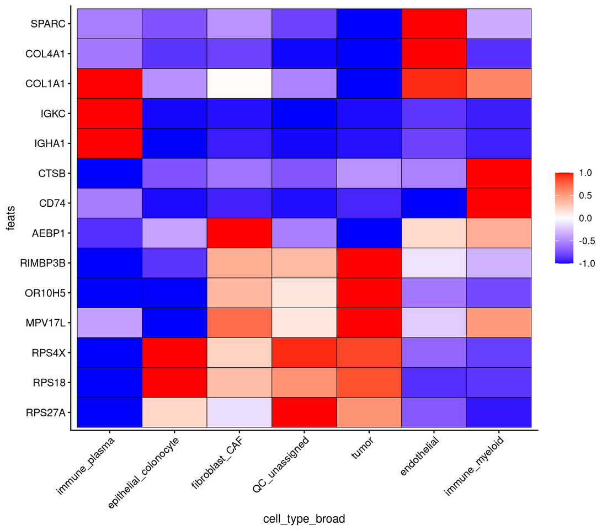
violinPlot(mini_cosmx, feats = MARKERS, cluster_column = "cell_type_broad",
expression_values = "normalized", strip_text = 7,
axis_text_x_size = 7)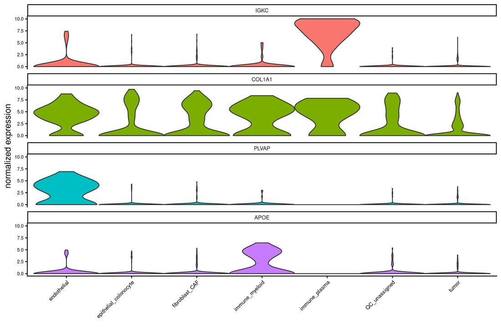
dimFeatPlot2D(mini_cosmx, expression_values = "normalized",
feats = MARKERS, dim_reduction_to_use = "umap",
point_size = 1, cow_n_col = 2)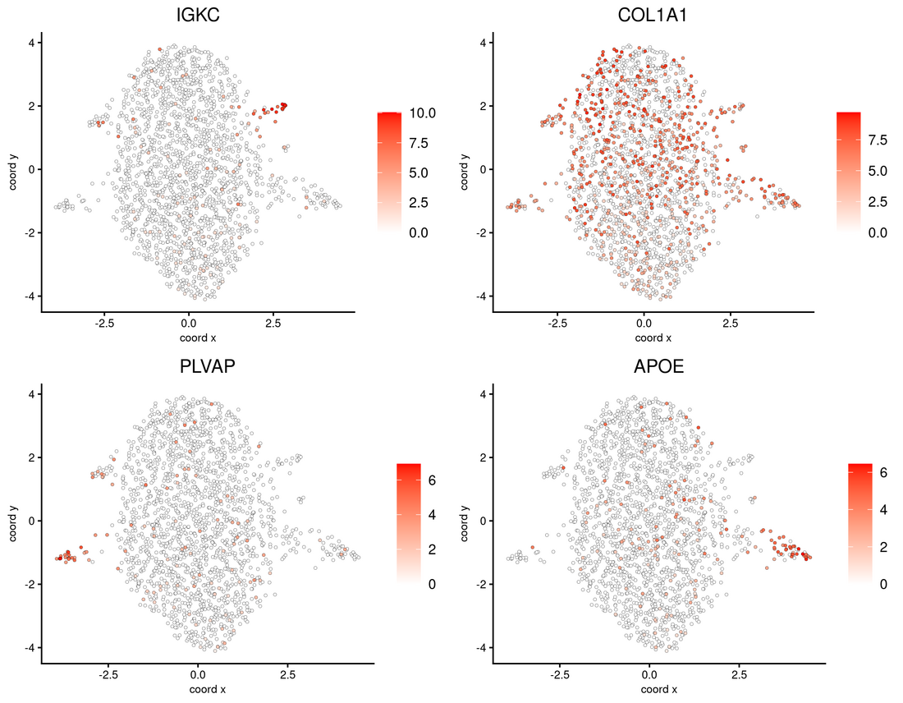
10 Spatial visualization
plotUMAP(mini_cosmx, cell_color = "cell_type_broad",
cell_color_code = CELL_TYPE_COLORS,
point_size = 0.9, point_alpha = 0.7,
point_shape = "border", point_border_stroke = 0,
show_center_label = TRUE, label_size = 3.1)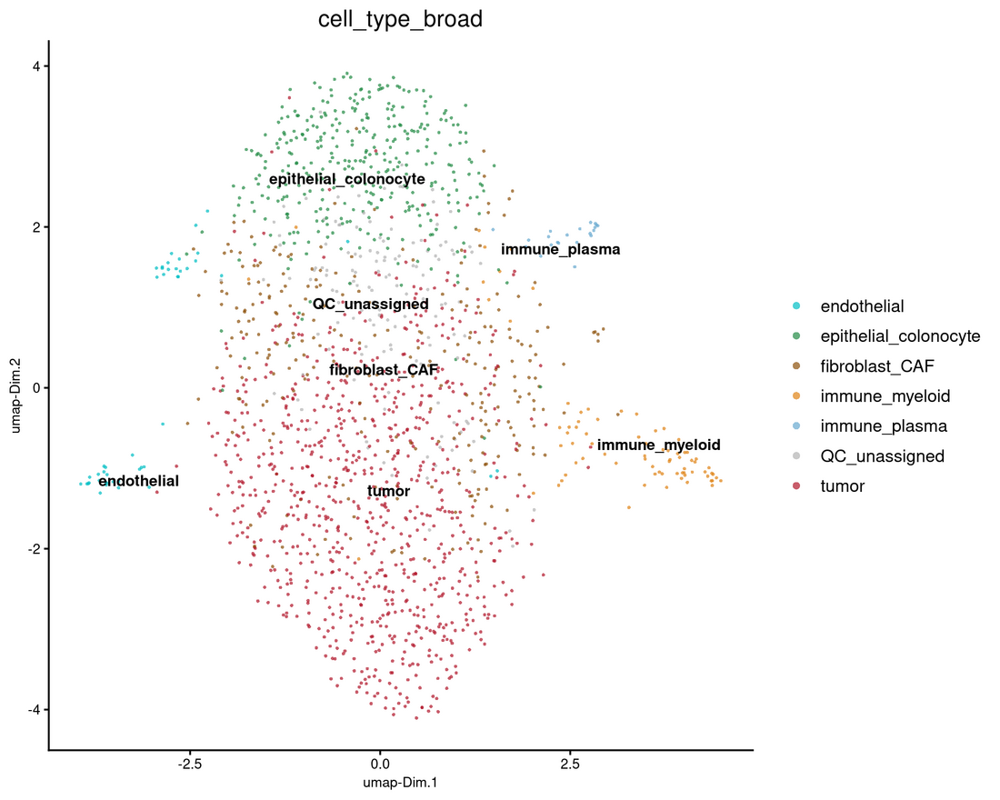
spatInSituPlotPoints(mini_cosmx,
polygon_feat_type = "cell",
show_polygon = TRUE, polygon_fill = "cell_type_broad",
polygon_fill_as_factor = TRUE,
polygon_fill_code = CELL_TYPE_COLORS,
polygon_color = "gray25", polygon_line_size = 0.05,
background_color = "white")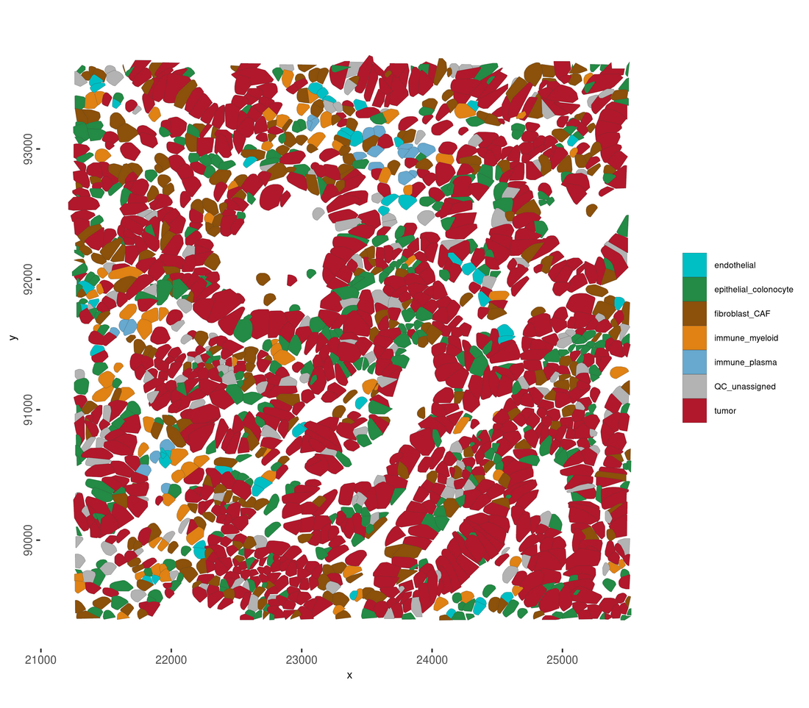
The clustering never saw spatial information, so the tissue architecture in this panel is an independent check on it.
cell_type_plots <- lapply(CELL_TYPES, function(cell_type)
spatPlot2D(mini_cosmx, cell_color = "cell_type_broad",
cell_color_code = CELL_TYPE_COLORS,
select_cell_groups = cell_type, show_other_cells = TRUE,
other_cell_color = "lightgrey", other_point_size = 0.6,
point_size = 0.6, point_shape = "no_border",
coord_fix_ratio = 1, show_legend = FALSE, title = cell_type,
background_color = "white",
show_plot = FALSE, return_plot = TRUE, save_plot = FALSE))
p_facets <- plot_grid(plotlist = cell_type_plots, ncol = 5)
GiottoVisuals::all_plots_save_function(mini_cosmx, p_facets,
default_save_name = "spatPlot2D",
base_width = 11, base_height = 7)
print(p_facets)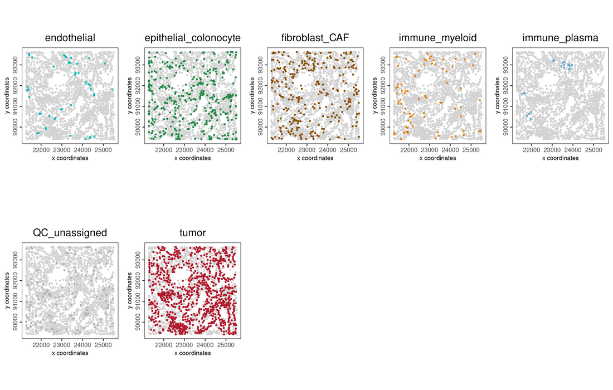
marker_plots <- lapply(head(MARKERS, 2), function(gene)
spatInSituPlotPoints(mini_cosmx, polygon_feat_type = "cell",
show_polygon = TRUE, polygon_fill = gene,
polygon_fill_as_factor = FALSE,
polygon_fill_gradient_style = "sequential",
polygon_color = "gray45", polygon_line_size = 0.05,
background_color = "white",
show_plot = FALSE, return_plot = TRUE,
save_plot = FALSE))
p_spat_feats <- plot_grid(plotlist = marker_plots, nrow = 1)
GiottoVisuals::all_plots_save_function(mini_cosmx, p_spat_feats,
default_save_name = "spatInSituPlotPoints",
base_width = 11, base_height = 5)
print(p_spat_feats)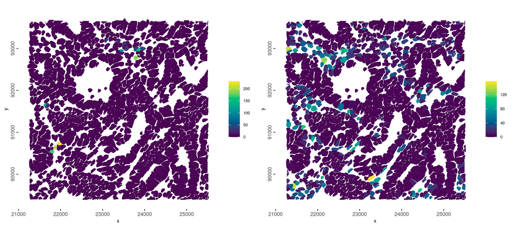
11 Transcripts in place
spatInSituPlotPoints(mini_cosmx,
feats = list(rna = c("EPCAM", "PLVAP", "IGKC")),
feat_type = "rna",
feats_color_code = c(EPCAM = "#FF77E9",
PLVAP = "#A64DFF",
IGKC = "#00E64D"),
plot_last = "points",
polygon_feat_type = "cell", show_polygon = TRUE,
polygon_fill = "cell_type_broad",
polygon_fill_as_factor = TRUE,
polygon_fill_code = CELL_TYPE_COLORS, polygon_alpha = 1,
polygon_color = "gray35", polygon_line_size = 0.05,
point_size = 0.55, background_color = "white")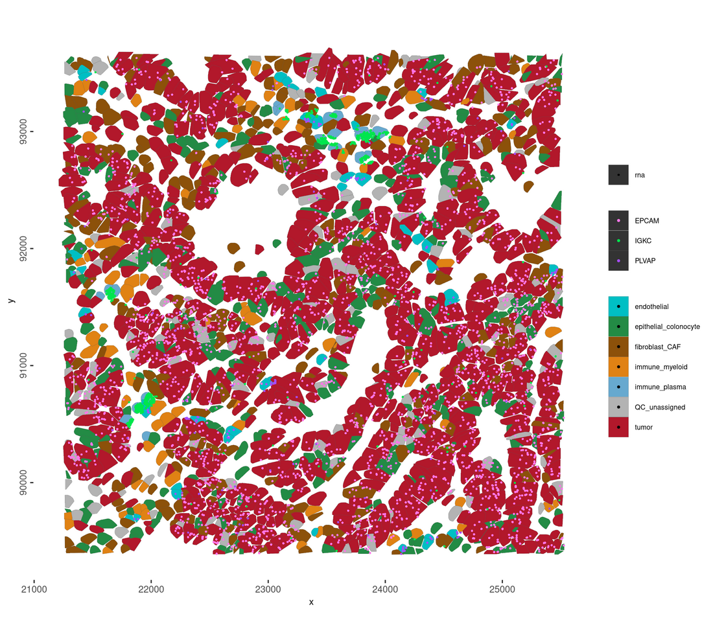
12 Spatial expression patterns
A Delaunay network over the cell centroids, then
binSpect(): each gene’s expression is binarized and tested
for whether the high cells are neighbors more often than chance.
mini_cosmx <- createSpatialNetwork(mini_cosmx, name = "Delaunay_network",
method = "Delaunay", minimum_k = 2,
maximum_distance_delaunay = 50,
verbose = FALSE)
# restricted to the highly variable features; the full panel is 18,505 genes
hvf_genes <- fDataDT(mini_cosmx)[hvf == "yes", feat_ID]
binspect_res <- binSpect(mini_cosmx, subset_feats = hvf_genes, verbose = FALSE)
spatial_genes <- binspect_res[score >= 30 & adj.p.value <= 0.05, feats]
head(binspect_res[, .(feats, score, adj.p.value)], 5)
length(spatial_genes)| feats | score | adj.p.value |
|---|---|---|
| IGKC | 11521.2360 | 0 |
| IGHA1 | 1543.5242 | 0 |
| IGFBP7 | 466.1884 | 0 |
| LUM | 416.3125 | 0 |
| COL12A1 | 305.0607 | 0 |
## [1] 65
spatFeatPlot2D(mini_cosmx, expression_values = "normalized",
feats = binspect_res$feats[1:6],
point_shape = "no_border", point_size = 0.6,
cow_n_col = 3, gradient_style = "sequential")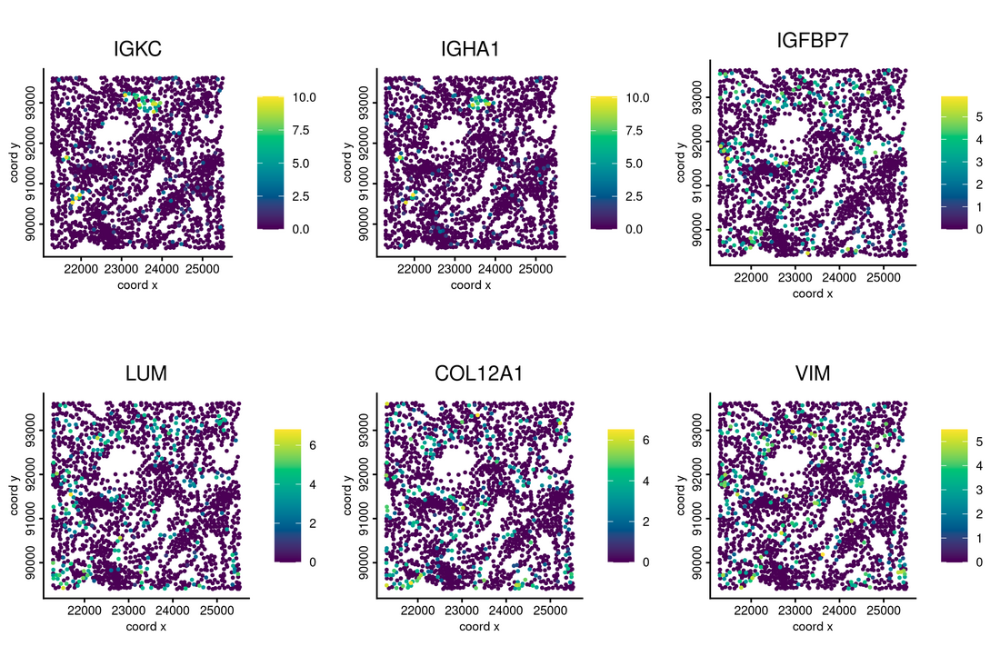
spat_cor <- detectSpatialCorFeats(mini_cosmx, method = "network",
spatial_network_name = "Delaunay_network",
subset_feats = spatial_genes,
expression_values = "normalized")
# k = 6 was chosen by eye, not optimized
spat_cor <- clusterSpatialCorFeats(spat_cor, name = "spat_netw_clus", k = 6)
heatmSpatialCorFeats(mini_cosmx, spatCorObject = spat_cor,
use_clus_name = "spat_netw_clus",
col = circlize::colorRamp2(c(-0.12, 0.08, 0.5),
c("#3B4CC0", "white", "#B40426")))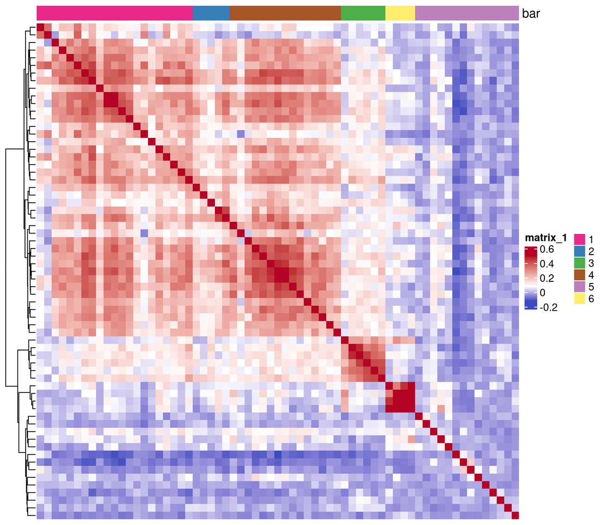
spat_modules <- spat_cor[["cor_clusters"]][["spat_netw_clus"]]
module_genes <- data.table(module = as.integer(spat_modules),
gene = names(spat_modules))
module_genes[, .(n_genes = .N, genes = paste(gene, collapse = ", ")),
by = module][order(module)]| module | n_genes | genes |
|---|---|---|
| 1 | 21 | A2M, BGN, C11orf96, C1R, CALD1, COL15A1, COL4A2, EMILIN1, FBN1, FNDC1, FSTL1, IGFBP3, IGFBP5, IGFBP7, LAMA4, PLVAP, SPARCL1, SULF1, TIMP3, VIM, WNT5A |
| 2 | 5 | ACTA2, CCN1, CCN2, PLAU, TAGLN |
| 3 | 6 | C1QC, HLA-DRA, HLA-DRB1, RGS1, RNASE1, SPP1 |
| 4 | 15 | C1S, CDH11, COL12A1, COL5A1, COL6A1, F3, FBLN1, HTRA3, LUM, MMP2, PODN, POSTN, SPON2, TNC, VCAN |
| 5 | 14 | EMP1, HIGD2B, IFNA16, IGHM, IL13RA2, KATNAL1, LIPN, MAB21L4, MMP7, MSTN, OLFM4, PI3, TBX22, XPNPEP2 |
| 6 | 4 | IGHA1, IGKC, JCHAIN, PRMT8 |
13 Spatial neighborhood composition
proximity <- cellProximityEnrichment(
mini_cosmx, cluster_column = "cell_type_broad",
spatial_network_name = "Delaunay_network",
number_of_simulations = 200, set_seed = TRUE, seed_number = SEED)
cellProximityBarplot(mini_cosmx, CPscore = proximity, min_orig_ints = 1,
min_sim_ints = 1, p_val = 0.01)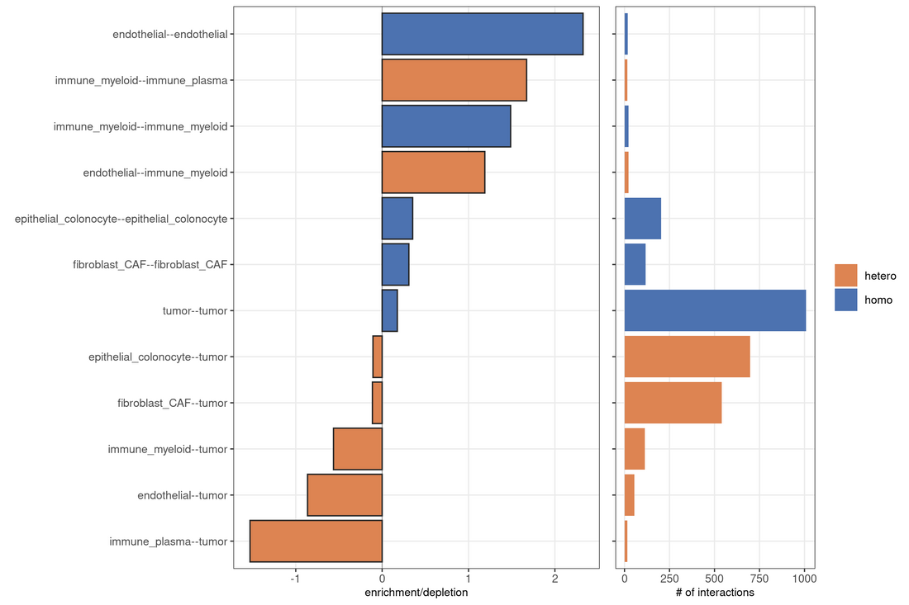
cellProximityHeatmap(mini_cosmx, CPscore = proximity, order_cell_types = TRUE,
scale = TRUE)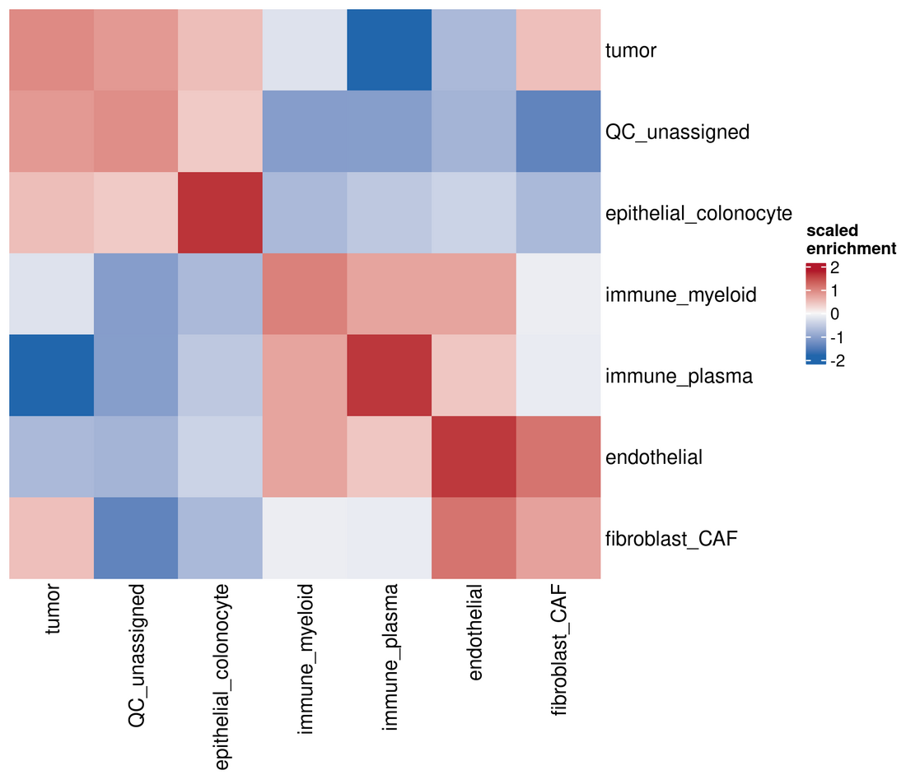
The heatmap shows every pair at once, so the self-association above appears as a bright diagonal; off-diagonal warmth marks types that interleave, and cool off-diagonal cells mark compartments that exclude one another.
cellProximityNetwork(mini_cosmx, CPscore = proximity, remove_self_edges = TRUE,
only_show_enrichment_edges = FALSE, node_size = 4,
node_text_size = 5)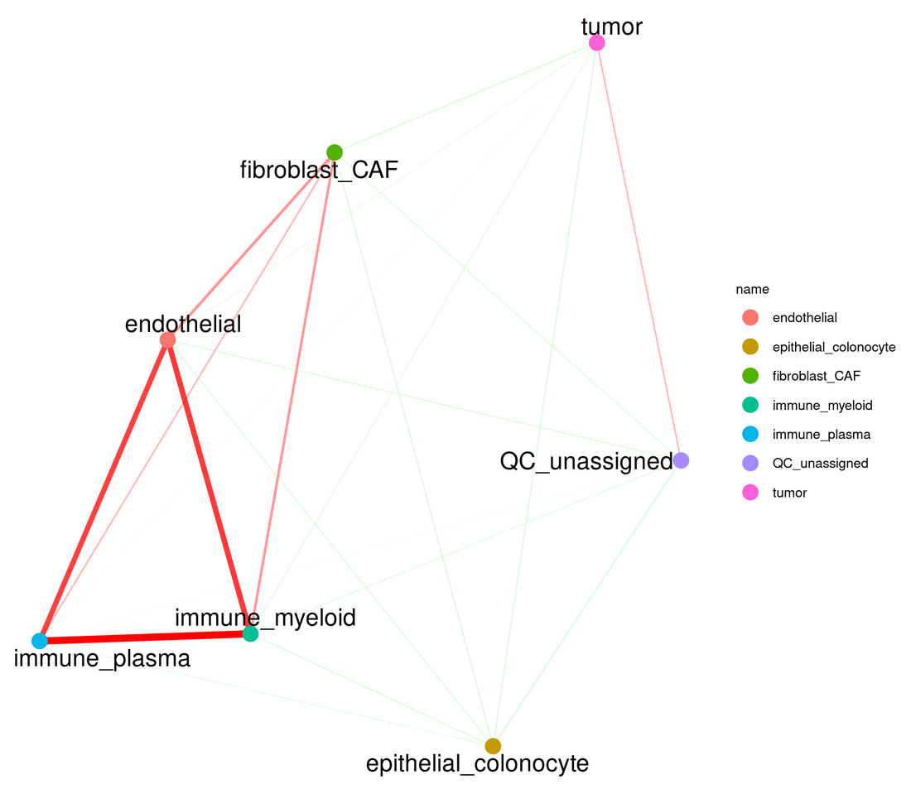
Edge thickness scales with the size of the score and edge color gives its sign: red where a pair is found together more often than chance, light green where it is found together less. Dropping the diagonal makes chains of mutually adjacent cell types easier to see than isolated pairs.
14 Saving the object
saveGiotto() writes a whole Giotto project (the object,
its expression and its spatial subobjects) into one self-contained
directory, which loadGiotto() reads back later as the same
object.
saveGiotto(gobject = mini_cosmx,
foldername = "mini_cosmx_object",
dir = results_folder,
include_feat_coord = FALSE, # drops the transcript coordinates:
# a fast, small in-memory save with
# no GiottoDisk backend needed
overwrite = TRUE)15 Session information
## R version 4.5.2 (2025-10-31)
## Platform: x86_64-pc-linux-gnu
## Running under: AlmaLinux 8.10 (Cerulean Leopard)
##
## Matrix products: default
## BLAS/LAPACK: FlexiBLAS NETLIB; LAPACK version 3.12.0
##
## locale:
## [1] LC_CTYPE=en_US.UTF-8 LC_NUMERIC=C
## [3] LC_TIME=en_US.UTF-8 LC_COLLATE=en_US.UTF-8
## [5] LC_MONETARY=en_US.UTF-8 LC_MESSAGES=en_US.UTF-8
## [7] LC_PAPER=en_US.UTF-8 LC_NAME=C
## [9] LC_ADDRESS=C LC_TELEPHONE=C
## [11] LC_MEASUREMENT=en_US.UTF-8 LC_IDENTIFICATION=C
##
## time zone: America/New_York
## tzcode source: system (glibc)
##
## attached base packages:
## [1] stats graphics grDevices utils datasets methods base
##
## other attached packages:
## [1] cowplot_1.2.0 ggplot2_4.0.2 data.table_1.18.4
## [4] GiottoData_0.3.7 GiottoVisuals_0.2.16 Giotto_4.3.0
## [7] GiottoClass_0.7.2
##
## loaded via a namespace (and not attached):
## [1] RColorBrewer_1.1-3 shape_1.4.6.1
## [3] jsonlite_2.0.0 magrittr_2.0.5
## [5] magick_2.9.0 farver_2.1.2
## [7] rmarkdown_2.30 GlobalOptions_0.1.2
## [9] ragg_1.5.0 vctrs_0.7.1
## [11] Cairo_1.7-0 memoise_2.0.1
## [13] GiottoUtils_0.2.7 terra_1.8-93
## [15] htmltools_0.5.9 S4Arrays_1.10.1
## [17] BiocNeighbors_2.4.0 SparseArray_1.10.8
## [19] sass_0.4.10 parallelly_1.47.0
## [21] bslib_0.10.0 htmlwidgets_1.6.4
## [23] plotly_4.12.0 cachem_1.1.0
## [25] igraph_2.2.1 iterators_1.0.14
## [27] lifecycle_1.0.5 pkgconfig_2.0.3
## [29] rsvd_1.0.5 Matrix_1.7-4
## [31] R6_2.6.1 fastmap_1.2.0
## [33] clue_0.3-66 MatrixGenerics_1.22.0
## [35] future_1.70.0 digest_0.6.39
## [37] colorspace_2.1-2 S4Vectors_0.48.0
## [39] dqrng_0.4.1 RSpectra_0.16-2
## [41] irlba_2.3.7 textshaping_1.0.4
## [43] GenomicRanges_1.62.1 beachmat_2.26.0
## [45] labeling_0.4.3 progressr_0.18.0
## [47] httr_1.4.8 polyclip_1.10-7
## [49] abind_1.4-8 compiler_4.5.2
## [51] doParallel_1.0.17 withr_3.0.2
## [53] S7_0.2.1 backports_1.5.0
## [55] BiocParallel_1.44.0 viridis_0.6.5
## [57] ggforce_0.5.0 R.utils_2.13.0
## [59] MASS_7.3-65 rappdirs_0.3.4
## [61] DelayedArray_0.36.0 rjson_0.2.23
## [63] bluster_1.20.0 gtools_3.9.5
## [65] tools_4.5.2 otel_0.2.0
## [67] future.apply_1.20.0 R.oo_1.27.1
## [69] glue_1.8.0 dbscan_1.2.4
## [71] grid_4.5.2 checkmate_2.3.4
## [73] cluster_2.1.8.3 generics_0.1.4
## [75] gtable_0.3.6 R.methodsS3_1.8.2
## [77] tidyr_1.3.2 BiocSingular_1.26.1
## [79] tidygraph_1.3.1 ScaledMatrix_1.18.0
## [81] metapod_1.18.0 XVector_0.50.0
## [83] BiocGenerics_0.56.0 foreach_1.5.2
## [85] ggrepel_0.9.6 pillar_1.11.1
## [87] limma_3.66.0 circlize_0.4.16
## [89] dplyr_1.2.0 tweenr_2.0.3
## [91] lattice_0.22-7 deldir_2.0-4
## [93] tidyselect_1.2.1 ComplexHeatmap_2.26.1
## [95] SingleCellExperiment_1.32.0 locfit_1.5-9.12
## [97] scuttle_1.20.0 knitr_1.51
## [99] gridExtra_2.3 IRanges_2.44.0
## [101] Seqinfo_1.0.0 edgeR_4.8.2
## [103] SummarizedExperiment_1.40.0 scattermore_1.2
## [105] stats4_4.5.2 xfun_0.56
## [107] graphlayouts_1.2.3 Biobase_2.70.0
## [109] statmod_1.5.1 matrixStats_1.5.0
## [111] lazyeval_0.2.2 yaml_2.3.12
## [113] evaluate_1.0.5 codetools_0.2-20
## [115] ggraph_2.2.2 tibble_3.3.1
## [117] colorRamp2_0.1.0 cli_3.6.6
## [119] uwot_0.2.4 reticulate_1.45.0
## [121] systemfonts_1.3.1 jquerylib_0.1.4
## [123] dichromat_2.0-0.1 Rcpp_1.1.1-1.1
## [125] globals_0.19.1 png_0.1-8
## [127] parallel_4.5.2 scran_1.38.1
## [129] sparseMatrixStats_1.22.0 listenv_0.10.1
## [131] SpatialExperiment_1.20.0 viridisLite_0.4.3
## [133] scales_1.4.0 crayon_1.5.3
## [135] purrr_1.2.1 GetoptLong_1.0.5
## [137] rlang_1.2.0